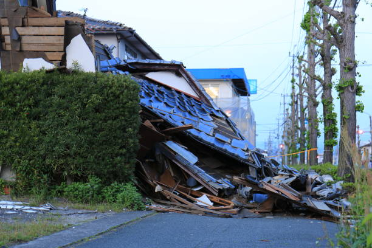
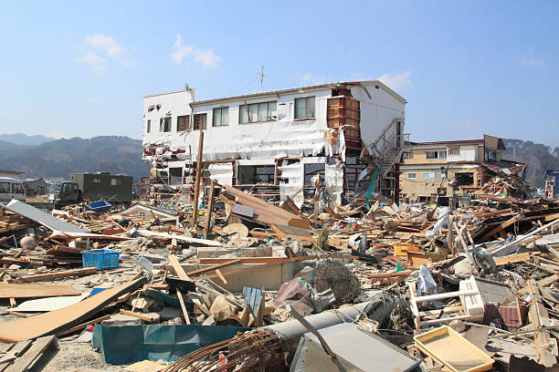

Major Earthquake Hits Japan
 
A strong 7.2 magnitude earthquake struck Japan early today, causing tremors across several cities. Residents are urged to stay alert. Emergency teams are assessing damage and ensuring safety in affected areas. Roads and railways are being checked, and authorities have asked everyone to follow evacuation protocols if necessary. No casualties have been reported yet, but aftershocks are expected.